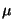
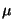

Next: Convolution as Filtering
Up: The Fast Fourier Transform.
Previous: The Fast Fourier Transform.
Contents
Index
Timing the FFT
We analyse the savings this method produces in the usual way. Let
 (m) be the number of additions needed to calculate the FFT on
a vector of length n = 2m, and let (m) be the corresponding number
of multiplications.
(m) be the number of additions needed to calculate the FFT on
a vector of length n = 2m, and let (m) be the corresponding number
of multiplications.
Lemma 6.7
For
m1,
(
m) =
m.2
(m - 1),
(
m) =
m.2
m.
Proof.
Clearly
(0) =
(0) = 0,
while
(1) = 1,
(1) = 2. More generally,
the result follows by induction, since
To check this, note that in addition to computing
feven
and
fodd, Equation
6.4 gives an additional
2
m multiplications when computing a transform of length 2
m + 1,
while Equation
6.5 shows these same products,

(
p), are all that are needed. The
addition formula is even more straightforward.

Thus we get the claimed reduction form O(n2) to
O(n log n). In
particular, this gives a method of implementing convolution using only
n + 3n log(n)/2 multiplications. Our original problem in
Section 6.1 had two polynomials, each of degree n - 1,
whose product was (of course) of degree 2n - 2. We saw in
Exercise 6.3 that the product polynomial could be computed
using convolution, providing we worked in
 , to avoid the
unwanted ``wrap-around'' part of the definition of convolution. We
now see that, provided we work in a space of dimension 2m where m
is the smallest integer such that
2n 2m, then we replace n2
multiplications with
O(m.2m) = O(n log n). If n is large, the
saving can be very significant.
, to avoid the
unwanted ``wrap-around'' part of the definition of convolution. We
now see that, provided we work in a space of dimension 2m where m
is the smallest integer such that
2n 2m, then we replace n2
multiplications with
O(m.2m) = O(n log n). If n is large, the
saving can be very significant.
In fact a further speed-up can be obtained by arranging the data so it
can be accessed simply. In order to compute  you need the
values
you need the
values
as two 4 - point transforms to combine into the 8 - point transform as
.
Each of these 4 - point transforms is calculated as two 2 - point
transforms, as implied by the bracketing. Thus in order to do the
calculation, it is convenient if the input data is re-ordered. If we
write
f ( (j)) for the required re-ordering, so is a
permutation of the set
{1, 2,..., n}, then
(j) = the bit
reversal of the binary expansion of j. For
example,
(j)) for the required re-ordering, so is a
permutation of the set
{1, 2,..., n}, then
(j) = the bit
reversal of the binary expansion of j. For
example,
(6) = (1102) = 0112 = 3.
Next: Convolution as Filtering
Up: The Fast Fourier Transform.
Previous: The Fast Fourier Transform.
Contents
Index
Ian Craw
2001-04-27